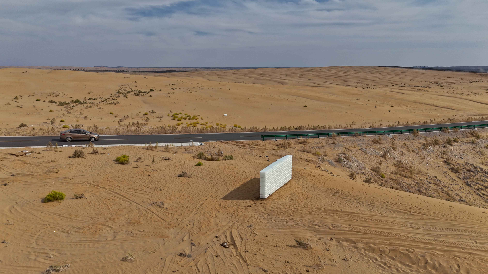
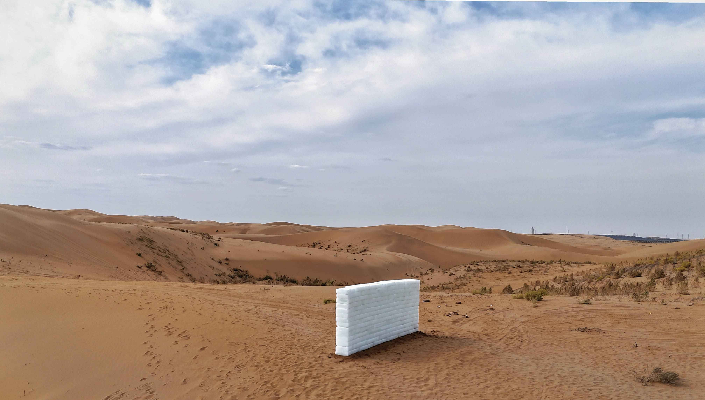
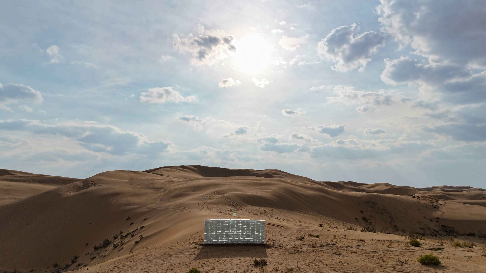
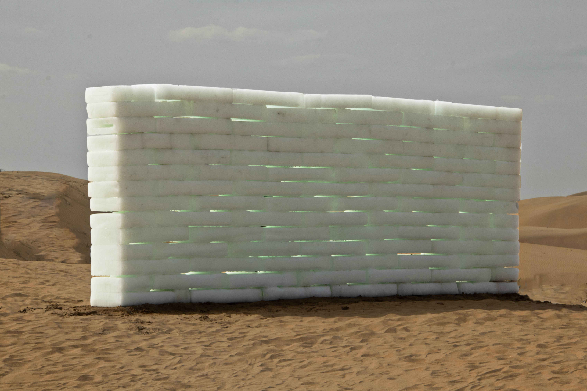
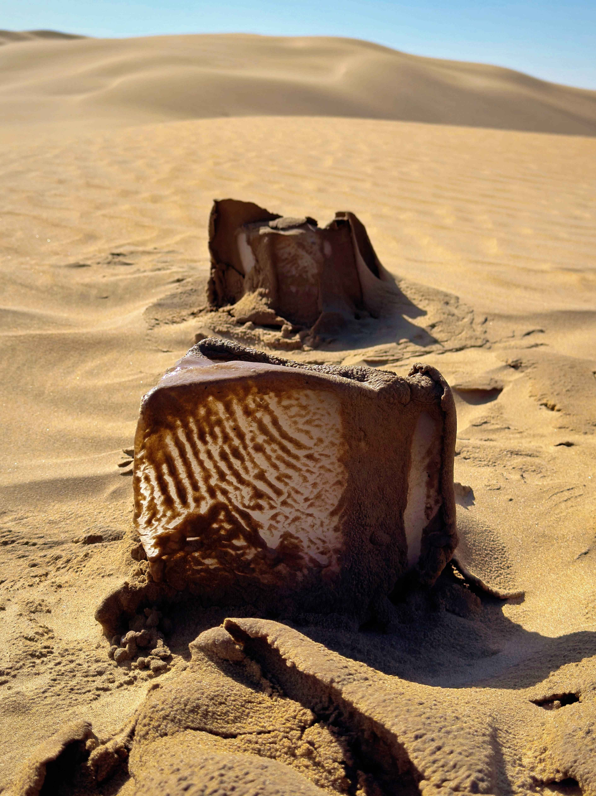
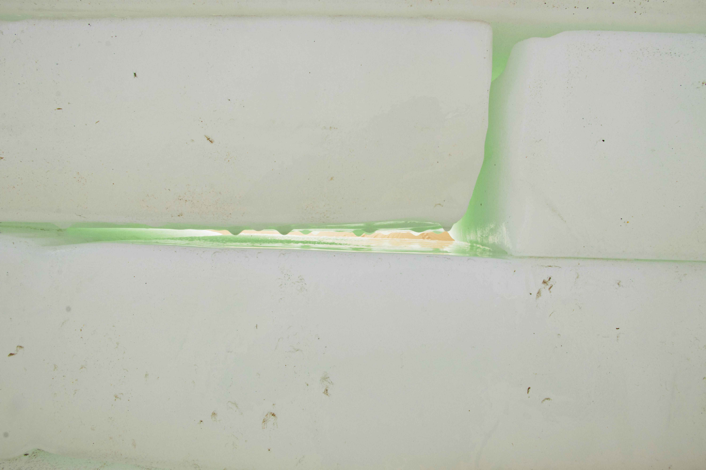

4.5 Tons is an ecological art installation completed in the autumn of 2024 in the Kubuqi Desert of Inner Mongolia, a collaboration between the author and artist Betta Liu. A temporary wall composed of approximately 4.5 tons of ice was positioned in a desert no-man's-land. The material, sourced from the nearby city of Baotou, was transported and stacked manually. Measuring 2.2 meters long, 0.9 meters wide, and 2.1 meters high, the ice wall stood perpendicular to a national highway. During its brief 21-hour lifespan, it became an abrupt yet emotionally resonant presence. Countless passing vehicles were drawn to a halt: some observers watched from a distance, others approached on foot, some touched the icy surface, and some even pressed their ears against the mass to listen to the sound of the melting water. The dripping sounds, the humid chill released during melting, and the shifting luster under sunlight and moonlight re-summoned the human body into a state of direct sensory connection with nature.
From an ecological art perspective, 4.5 Tons explicitly rejects the aesthetic cult of permanence and monumentality found in traditional sculpture; it refuses to anchor art in a fixed form that can be preserved or reproduced long-term. As a material, ice naturally carries an unstable certainty. It originates from water and ultimately returns to water or vapor. This transformation does not depend on the artist's personal will or subjective agency, but is governed entirely by natural laws and environmental conditions. Under the desert’s intense sunlight, airflow, and ground heat, the ice wall undergoes a complete cycle: the establishment of form, the loosening of structure, partial collapse, total disintegration, and final disappearance. Ultimately, it leaves only a faint, transient mark on the sand—a shape resembling the skeletal shadow of a massive animal, pointing toward a state of existence that is both solemn and fragile.
This dynamic, irreversible process shares a profound philosophical resonance with the concept of the "Rhizome" proposed by Deleuze and Guattari. A rhizome is not a closed system predicated on a stable central structure, but an open network that generates connections through constant material flow and energy exchange. 4.5 Tons presents a quintessential rhizomatic existence: it is a momentary intersection of heterogeneous matter (ice, water, air, desert) and heterogeneous subjects (artists, passersby, vehicles, wind, and temperature). Melting no longer signifies mere disappearance, but a classic rupture-regeneration mechanism: while the form collapses, relationships are being generated; while the structure disintegrates, new energy and matter are diffusing.
Consequently, the work allows nature to participate deeply in the generation of art through its own physical laws. This shifts artistic practice from a technical act of absolute human control to an open process involving both human and non-human actors. Humans, ice, desert, air, and the environment together constitute a fluid ecological complex. The physical engagement of the audience—approaching, touching, smelling—is not an incidental behavior but a vital force in the expansion of the rhizomatic structure. Human body heat, breath, and movement directly participate in the temperature changes of the ice and the generation of local humidity.
In this sense, 4.5 Tons offers a more complex and authentic understanding of symbiosis. Symbiosis is no longer romanticized as an idealized state of harmony, but as a rhizomatic coexistence that maintains tension between rupture and generation. When the ice wall finally vanishes, the work does not conclude. As the rhizome concept suggests, dissipation is not an end, but a new mode of extension. The work disintegrates at the material level but continues to spread across relational, perceptual, and cultural dimensions, integrating ecological existence and the life process into a continuously evolving logic of art.





